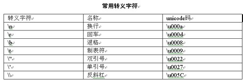
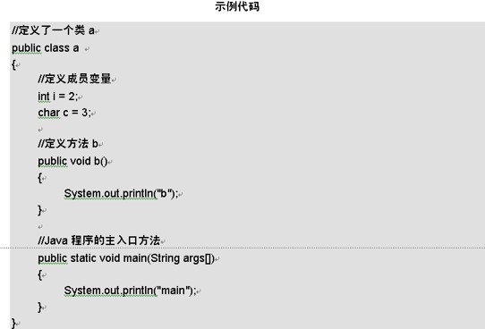
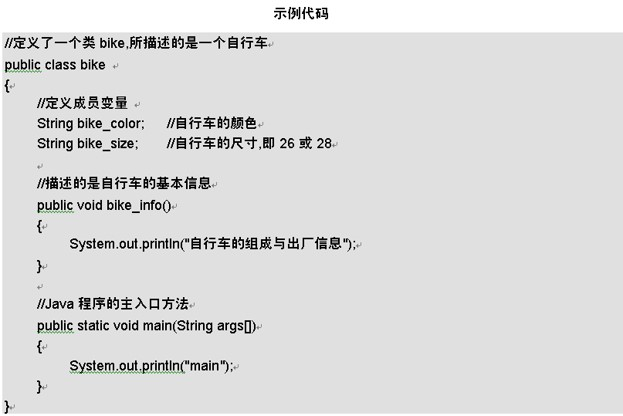
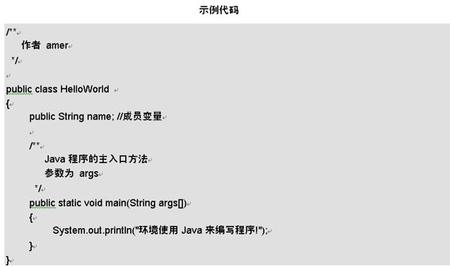

本章开始介绍Java的基本数据类型，如整型、浮点型等，以及它们之间的转换，最后介绍标识符的命名规则。通过本章的学习，同学们应该能够完成如下目标。
- 了解Java有哪些基本数据类型。
- 掌握各种数据类型的基本含义。
- 学会如何进行数据类型转换。
- 了解标识符和保留字等基本概念。
- 了解如何在Java程序中进行注释。
2.1 数据类型
所谓数据类型，就是能真正表示数的类型，在Java里数据基本类型一共有8种，int表示整型，float表示浮点类型，下面将针对部分类型作详细地介绍。
2.1.1 整型
整型是Java数据类型中的最基本类型，使用int表示。所谓整型就好比日常生活中的十进制数，是没有小数点的。在Java里整型是有符号的，且有正负之分。如-10、20。
Java里整型的数可以使用3种进制的数来表示，下面就对这三种进制来进行介绍。
-
10进制：10进制数在日常生活中最常见，大家天天都在用。Java里定义一个10进制数如下。
//int为基本数据类型,是最常用的基本数据类型了 //正的10进制数 int i = 11; //负的10进制数 int j = -12;
- 8进制：8进制数的进制规则是满8进1，包含0-7的8个数字，在整数前面添加一个”0”就表示为8进制数。
- 16进制数：16进制数的进制规则是满16进1，包含0-9，a-f的16个数字，在整数前面添加一个”0x”表示16进制数。
2.1.2 浮点型
浮点型同样也是Java数据类型中的基本类型，整型表示整数，浮点型则表示小数。所谓浮点类型就好比日常生活中的10进制数加上小数点。在Java里浮点类型是有符号且有正负之分的。
-
float：单精度浮点数。声明为float类型的浮点数时，要在结尾加F或f，浮点类型默认的类型是double。
//正的浮点数 float i1 = 11.11F; //负的浮点数 float j2 = -17.15f; -
double：双精度浮点数。声明为double类型的浮点数时，要在结尾加D或d。虽然double类型时结尾的D和d可加可不加，但是这里建议在double数据类型的数后面加上D或者d，以便能够和单精度浮点数区分。
//正的浮点数 double i1 = 12.11D; //负的浮点数 double j2 = -14.11d;
2.1.3 字符型(char)
字符型是一种表示字符的数据类型。char型表示一个字符，16位，占用2个字节。一般一个char型数值只用来表示一个字符的，用“'”单引号来表示。例如下面的例子。
//表示一个字符
char c1 = 'c';
//表示一个unicode码
char c2 = '\u005E';
//表示一个整数
char c3 = 56;
Java中还有一种特殊的字符型数值，那就是转义字符。有一些特殊符号是不能通过一般字符来进行显示的，例如换行符和制表符。在表中列出了Java中比较常用的转义字符。
2.1.4 布尔型(boolean)
布尔型是一种起到判断作用的数据类型。boolean类型的取值非常简单，就好比日常生活中的真与假，在Java中用ture与false，表示真与假。例如下面的例子。
boolean b1 = false; boolean b2 = true;
2.2 数据类型间的转换
在日常生活中的斤和两，它们都是重量单位，一斤可以转换为十两。在Java中，整型、浮点型等都是基本的数据类型，它们是能够进行数据类型转换的。下面介绍数据类型之间的数据转换都有哪些转换方式。
2.2.1 自动转换
所谓自动转换就是不需要明确指出所要转换的类型是什么，是由Java虚拟机自动来转换的。转换的规则就是小数据类型变大数据类型，但大的数据类型的数据精度有的时候要被破坏。下面看一段代码。
//定义各种数据类型 int i = 123; char c1 = 22; char c2 = 'c'; byte b = 2; //自动转换的数据类型 int n = b; long l = i;
2.2.2 强制转换
所谓强制转换，是有一种强制性的，明明不能自动转换，而强制性地进行转换。看下面的例子：
//定义数据类型 int i = 22; long L = 33;//long为长整型 //强制转换数据类型 char c = (char)i; int n = (int) L;
在其中i原来是一个int整型，但要将它强行转换成char字符型。同样L原来是一个long型，但要将它强行转换成int整型。通过前面的学习已经知道，long型的取值范围最大值可以为2的63次方减1，而int型的取值范围最大值只有2的31次方减1，所以如果L为一个大于2的31次方减1，在强制类型转换时就会丢失精度，使数值发生变化，这也是同学们需要注意的地方。
2.2.3 隐式转换
所谓隐含转换和自动转换很相似，Java虚拟机根据数据类型的位数来判断此数据类型是否能装载此数据，如果能，Java就默认进行了转换。举例说明如下。
//例子1 byte b = 111; //例子2 int i = 222; byte c = (byte) i;
在这两条语句中有2个转换，一个是111转换成byte类型的数据，因为byte类型的数据位数能装载下111，所以能进行转，这就是隐式转换。把222转换成byte类型的c就不能进行隐式转换，因为能进行隐式转换的只能是常量而不能是变量。
2.3 标识符的命名
在Java里方法名、类名、成员变量名都是标识符。所谓标识符，就好比日常生活中一个物品的名称一样，是一个代号，用来表示该物品。命名标识符的好处就是让外人看，一下就能了解这个标识符的用途。下面介绍怎样命名标识符。
2.3.1 标识符的命名规则
标识符要以英文字母开头，是由英文字母或数字组成的，其他的符号不能出现在标识符里。标识符具体说明如下所述。
- 英文字母是大写的A-Z，小写的是a-z，以及“_”和“$”。
- 数字包括0-9。
- 其他的符号是不能用在标识符里的。
- 不能用Java所保留的关键字。
- 在Java里标识符是大小写敏感的。
说明：符合标识符的命名规则并不是一种最好的命名方法。给一个标识符命名首先要符合命名规范，还要负责特点含义
常见命名规范有：匈牙利命名法、驼峰命名法、帕斯卡（Pascal）命名法、下划线命名法等，具体的描述可去搜索引擎查看。
2.3.2 代码演示如何定义标识符
在本节中来演示什么是正确和错误的标识符。
int i = 22; int I = 33; char 2i = 23; float float = 3f;
代码说明：
整型i和整型I在这里为两个不同的标识符，因为在Java里标识符是区分大小写的。2i标识符的第一个字母为数字，所以不能为正确的标识符。float为Java保留的关键字，关键字不用在标识符里，而是另有用途的。
2.3.3 错误的标识符命名
一个良好的标识符是能体现此标识符所描述的方法、成员变量或类的含义的。下面看例子。
【范例】示例代码是一个错误标识符命名的程序。
2.3.4 正确的标识符命名
【范例】示例代码是一个正确标识符命名的程序。
这里就是考验同学们英语水平的时候啦(=^ ^=)
2.4 关键字
所谓关键字，就好比日常生活中一个物品的标识，和人的名字很相似，具有特殊的含义。在Java里保留了很多关键字，这些关键字都有其各自的用途。因此标识符是不用这些关键字的。
Java所保留的关键字在编码的时候是不能使用的，如果使用将提示编译错误。Java所保留的关键字如表所示。

2.5 代码注释
所谓注释，就好比在日常生活中听老师讲课所作的笔记，笔记的作用是解释知识点,帮助加强记忆。在Java中，在程序中通常给出一些解释，也可以提示某段代码的作用，这就是Java中的代码注释。注释的代码是不被编译的，所以不用担心执行效率的问题。
2.5.1 行注释
所谓行注释就是一整行的注释信息，单行注释也是最常用的，行注释的语法是“//”，在注释符号后面一整行都被作为注释信息。例如下面的小程序。
【范例】示例代码是一个进行单行注释的程序
public class HelloWorld
{
//这是Java程序的入口方法
public static void main(String args[])
{
System.out.println("环境使用Java来编写程序!");
}
}
2.5.2 块注释
所谓块注释和行注释是一个意思，都是注释信息的意思，起到提示的作用。块注释的语法是“/* */”，以“/*”开始，以“*/”结束，在这个区域内的文字都将作为注释信息。例如下面的小程序。
/* * @param name * @author amer */
2.5.3 文档注释用户自定义类型
所谓文档注释是描述类的，通过在类里定义的文档注释，可以帮助程序员了解此类具有哪些功能，以及此类的相关信息的一个注释。文档注释以“/**”开头，以“*/”结尾,把前面的例子加以修改。
【范例】例如下面的小程序。
2.5.4 TODO注释
TODO注释类似于我们的书签，标记下次我们需要做的工作。IDE会在Task List中列出我们的所有TODO注释，以便于快速定位到代码段。
TODO注释的用法跟行注释一样，只不过在//后面要加上TODO四个字母。例如：
... //TODO 明天继续做这个任务 ...
2.6 综合练习
1.判断下面程序是否能够正常运行。public class LianXi1
{
public static void main(String args[])
{
int For=1; //定义一个变量名称为For的变量
int Do=2; //定义一个变量名称为Do的变量
int t=For+Do;
System.out.println("变量和为"+t);
}
}
同学们可以把答案通过评论发布出来
2.7 小结
通过对本章的学习可以让同学们了解Java的基本数据类型的定义和它们之间的转换规则，以及它们之间的注意事项。掌握标识符的定义是学习本章的重点，也是写好程序的基本。如果还不完全了解标识符的问题，还可以参考电子工业出版社出版的《Java程序设计应用教程》一书来进行学习。在下一章中将继续讲解Java基本语法中的运算符。